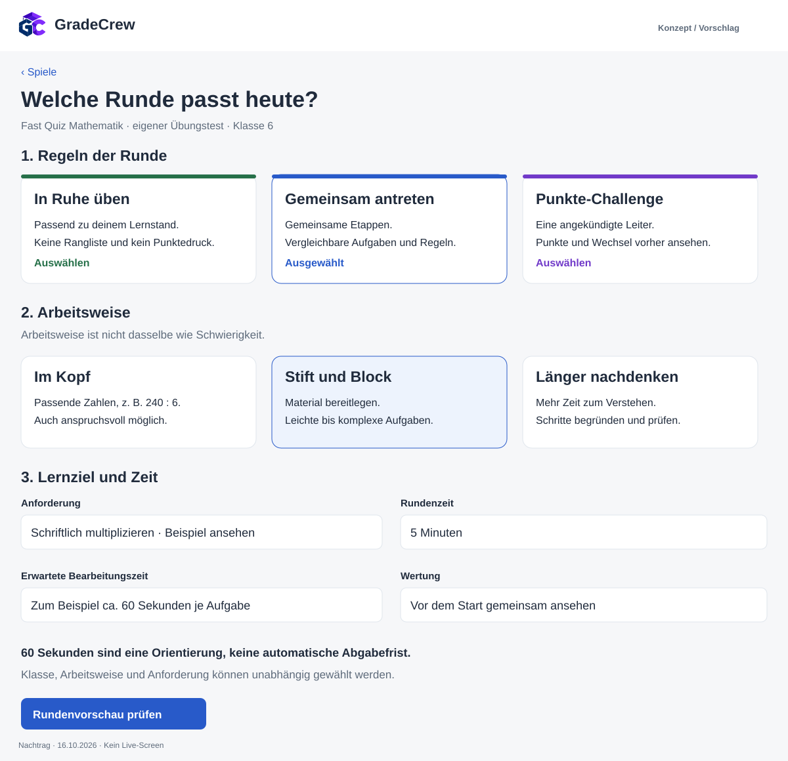
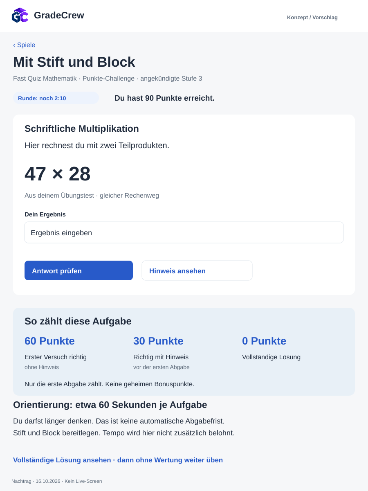

Nachtrag vom 16.10.2026 · zwei statische Vorschläge · keine Live-App
Rundenregeln und Arbeitsweise getrennt wählen

Drei Rundenpresets werden unabhängig von Arbeitsweise und fachlicher Anforderung gewählt. Die angezeigte Zeit je Aufgabe ist eine Orientierung; die Rundenzeit ist eine eigene Regel. Wertung und Wechsel werden vor dem Start angekündigt.
Zeit zum Denken und eine vorher erklärte Wertung

Punkte-Challenge als ausdrücklich angekündigter Planmodus: Quellenfamilie schriftliche Multiplikation, Stufe 3 bei 90 bereits erreichten Punkten. Die passende Aufgabe 47 × 28 ist mit zwei Teilprodukten lösbar. Erste Abgabe richtig ohne Hinweis: 60 Punkte; Hinweis vor erster Abgabe: 30; vollständige Lösung: keine Wertung. Die Orientierung von 60 Sekunden und der verbleibende Rundentimer sind getrennt. Kein Livevertrag und keine erprobte Punkteskala.